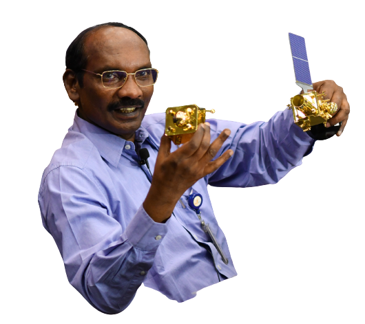
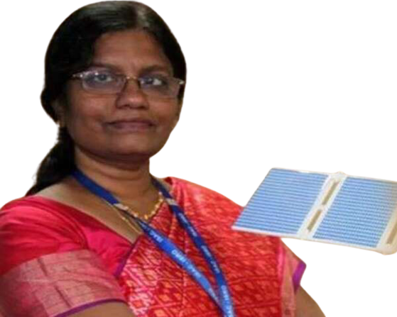
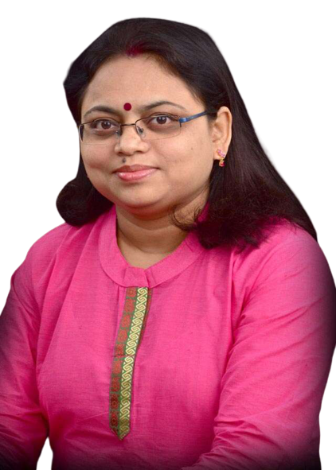

As ISRO chairman, Kailasavadivoo Sivan (62), has been the face of the Chandrayaan-2 mission.
Sivan, who was appointed ISRO chairman in 2018, is often attributed for the frugality of the space agency's missions as he was raised on a farm in Kanyakumari.

Project Director
Muthayya Vanitha
Muthayya Vanitha who is the Chandrayaan-2's Project Director, making the mission the first female-led inter-planetary project.
However, initially, Vanitha was reluctant to step into the role, and had to be persuaded by Chandrayaan-1 Project Director M Annadurai who believed her to be an expert in data-handling.
Vanitha, who's from the UR Rao Satellite Center, has previously worked with Cartosat-1, Oceansat-2 and Megha-Tropiques teams.

Mission Director
Ritu Karidhal
Ritu Karidhal, who's the Mission Director for Chandrayaan-2.
Karidhal has worked at ISRO for the past 22 years and is a graduate of Lucknow University and the Indian Institute of Science, Bengaluru.
Karidhal is also from the URSC and took up key duties in the Mars Orbiter Mission of 2013 as its Deputy Director (Operations).

VSSC Director
Dr S Somanath
Dr. S Somanath is the Director of the Vikram Sarabhai Space Center (VSSC), which provided the GSLV MkIII launcher for Chandrayaan-2.
A mechanical engineer by training, Somanath was instrumental in resolving the glitch in the cryogenic engine in GSLV Mk-III, which led to a week's delay in Chandrayaan-2's lift-off.
He has been involved with the GSLV Mk-III project from its beginning.